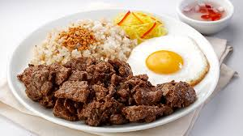

Home
Tapsilog

Tapsilog is one of my favorite breakfast meal options during big days. These are days wherein I need to complete several tasks. Having this meal gives me the needed energy to perform work and it keeps me full longer. I also enjoy starting my day with a delicious breakfast.
The word Tapsilog is an acronym that stands for Tapa Sinangag at Itlog. These are the three components of the meal. Tapa refers to beef tapa. This are fried marinated beef slices.
Ingredients
- Beef
- Soy Sauce
- Garlic
- Vinegar
- Sugar
- Spices
- Rice
- Salt and Pepper
- Egg
- Cooking Oil
Steps
- Mix soy sauce, vinegar, garlic, sugar, salt, pepper, and a bit of oil.
- Add thinly sliced beef and marinate for at least 30 minutes (or overnight for more flavor).
- Heat oil in a pan and cook the marinated beef until tender and caramelized (around 5-7 minutes).
- Sauté minced garlic in oil until golden.
- Add cold, day-old rice and stir-fry, seasoning with salt and pepper.
- Fry an egg sunny-side-up or to your preferred doneness.
- Serve the cooked tapa with the garlic rice and fried egg. Enjoy!